السلسلة 5
السيارة (صنف B) · 40 سؤال بالصوت. حاول تجاوب بوحدك، من بعد شوف الجواب.
السؤال 1
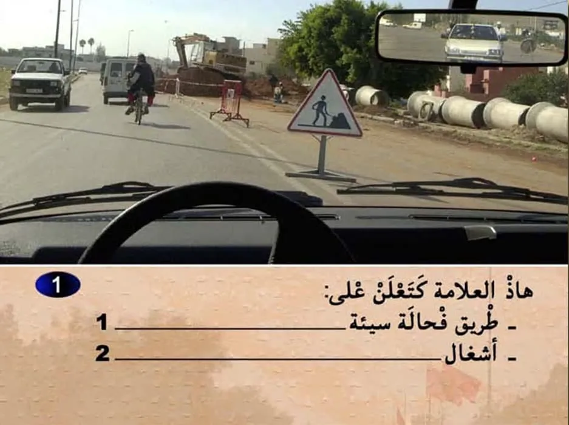
بيّن الجواب
الجواب الصحيح: 2
كما هو موضح في الصورة، ففي مقدمة الطريق توجد أشغال، كما ان العلامة الطرقية الموجودة على جانب الطريق تعني ان هنالك أشغال طرقية، يعني الإجابة الصحيحة هي 2.
السؤال 2
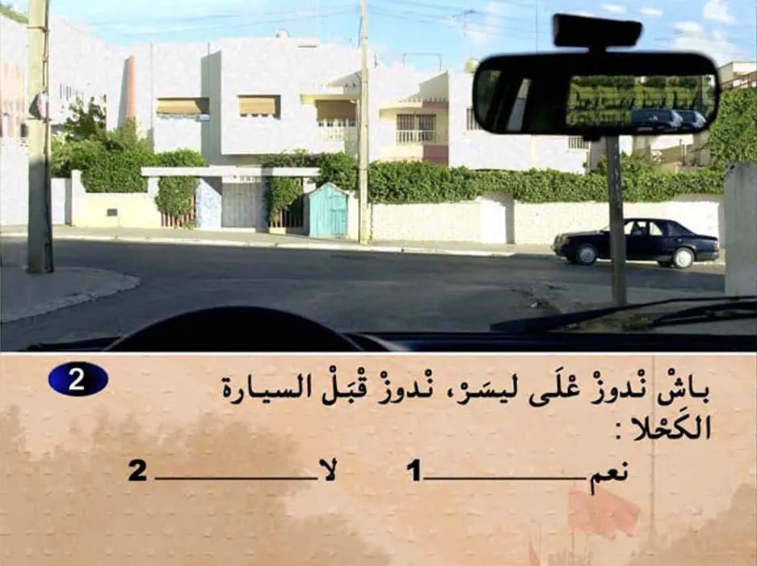
بيّن الجواب
الجواب الصحيح: 2
توجد سيارة قامة من جهة اليمين، في ملتقيات الطرق دائما نعطي حق الأسبقية للسيارات القادمة من اليمين ادا لم تتواجد العلامات او اشارات الضوئية اللتي تنظم حركة السير، لذلك غادي ندوز بعد السيارة وليس قبلها.
السؤال 3
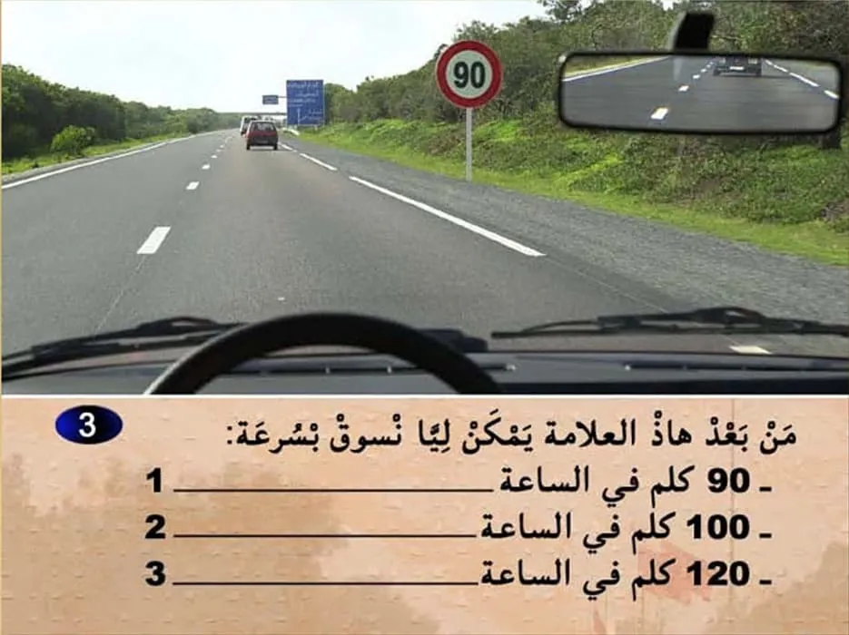
بيّن الجواب
الجواب الصحيح: 1
نحن نتواجد في الطريق السيّار، والسرعة القصوى هي 120 كلم في الساعة، لكن توجد علامة المنع والتي تبدأ من عند العلامة، لذلك نلغي القاعدة الأولى للطريق السيّار ويجب الإلتزام بعلامة المنع والتي تجبرني على السير بسرعة 90 كلم في الساعة أو أقل، وليس اكثر.
السؤال 4
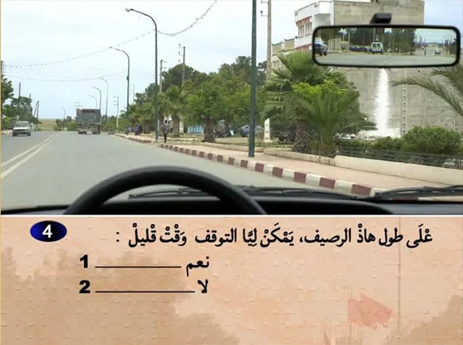
بيّن الجواب
الجواب الصحيح: 2
بما ان الرصيف الطرقي مصبوغ باللون الأبيض والأحمر، هذا يعني ان الوقوف مسموح به ولكن التوقف غير مسموح به.
السؤال 5
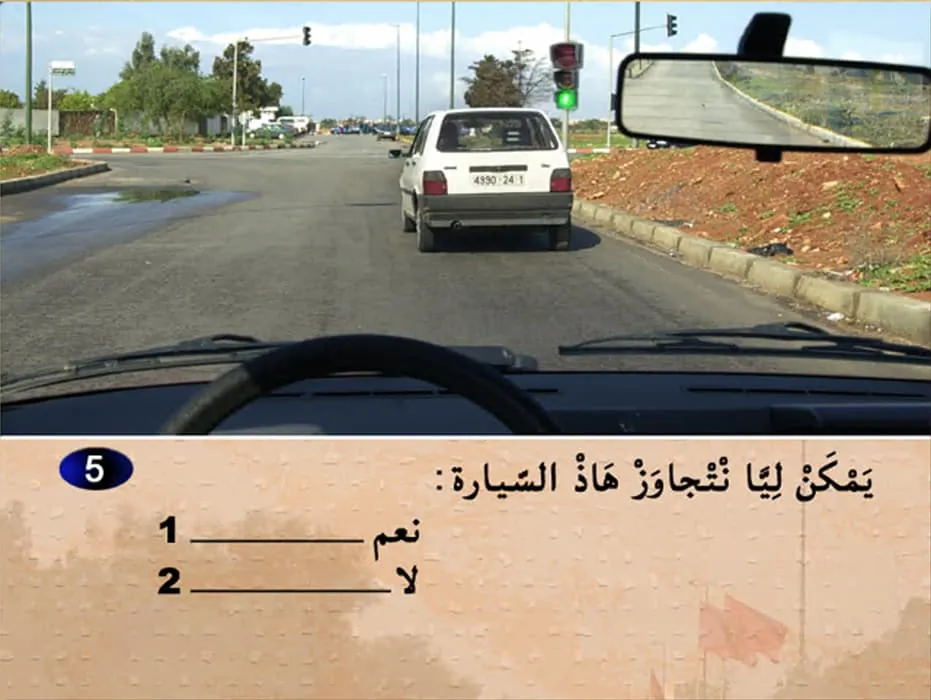
بيّن الجواب
الجواب الصحيح: 1
الإشارة الضوئية باللون الأخضر وهي تسمح لي بالمرور، بما انه لا يوجب اشارات أفقية في الطريق تمنعني من التجاوز إذا يمكنني تجاوز السيارة البيضاء بدون مشكل.
السؤال 6
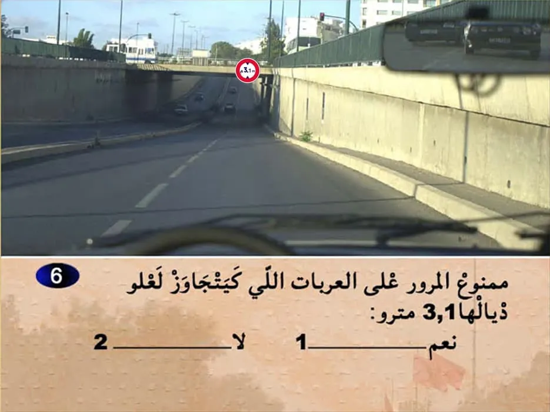
بيّن الجواب
الجواب الصحيح: 1
العلامة توضح ان ممنوع على العربات اللتي إرتفاعها اكثر من 3.1 متر المرور.
السؤال 7
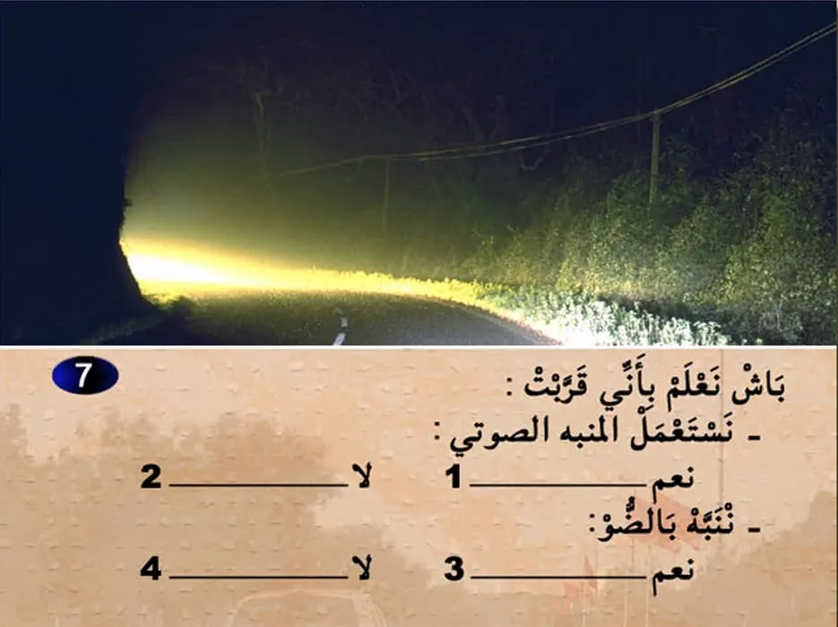
بيّن الجواب
الجواب الصحيح: 2 و 3
نتواجد خارج المدينة والمنبه الصوتي مسموح به ولكن في هذه الحالة بما اننا نتواجد في الفترة الليلية ففاعليّة المنبه الصوتي غير فعالّة في هذه اللحظة، لذلك لا أنبه به، ويجب علي ان أنبه بالضوء لانه أكثر فعّالية وسوف يراه سائق العربة القادمة.
السؤال 8
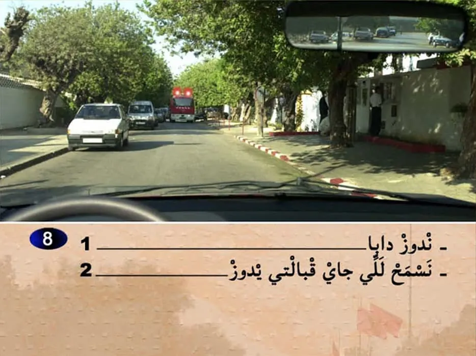
بيّن الجواب
الجواب الصحيح: 2
الشرطة أو سيارات الإسعاف او رجال المطافئ او ... لديهم حق الأسبقية دائما، إذن في هذه الحالة يجب ان أسمح بمرور رجال المطافئ.
السؤال 9
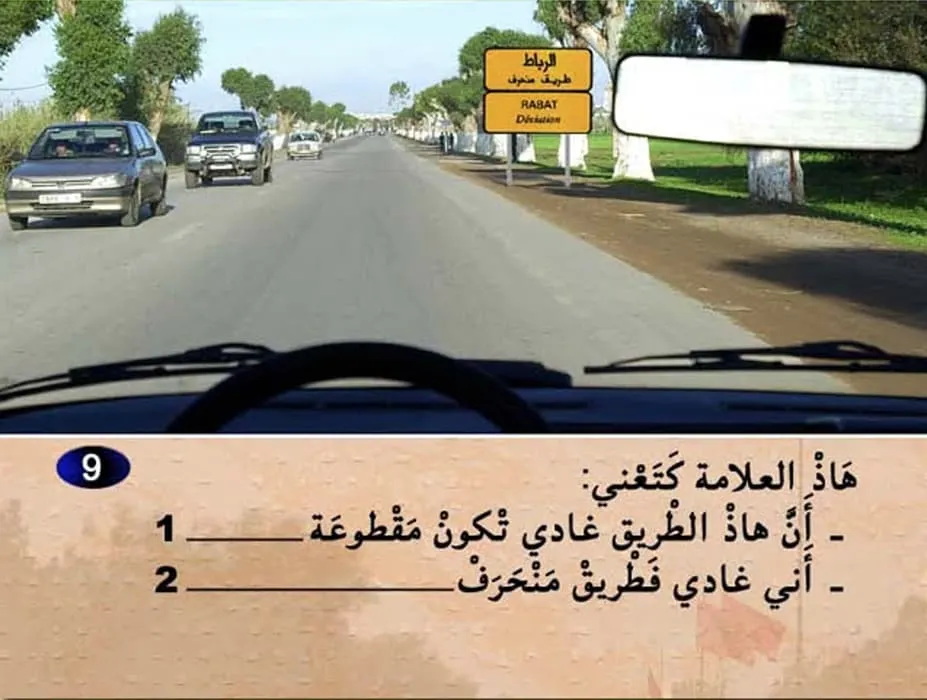
بيّن الجواب
الجواب الصحيح: 2
العلامات الطرقية باللون الأصفر فهي علامات مؤقتة، كما هو واضح ومكتوب في العلامة فإني في طريق منحرف.
السؤال 10
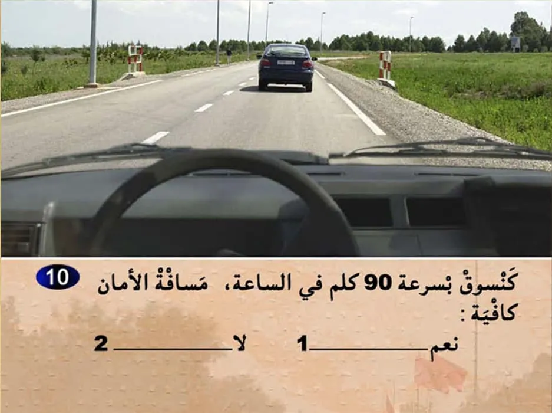
بيّن الجواب
الجواب الصحيح: 2
مسافة الأمان في المسافة التي توجد بيني وبن السارة التي أمامي، والخط المتصل المتواجد على اليمين يمثّل 20 متر والفراغ بين الخطوط تقريبا 5 أمتار يعني الان بيني وبين السيارة 25 متر تقريبا، ومسافة الامان بمنا أني اسير بسرعة 90 كلم في الساعة هي: 9 ضرب 6 تعطي 54 متر، اذا المسافة غير كافية.
السؤال 11
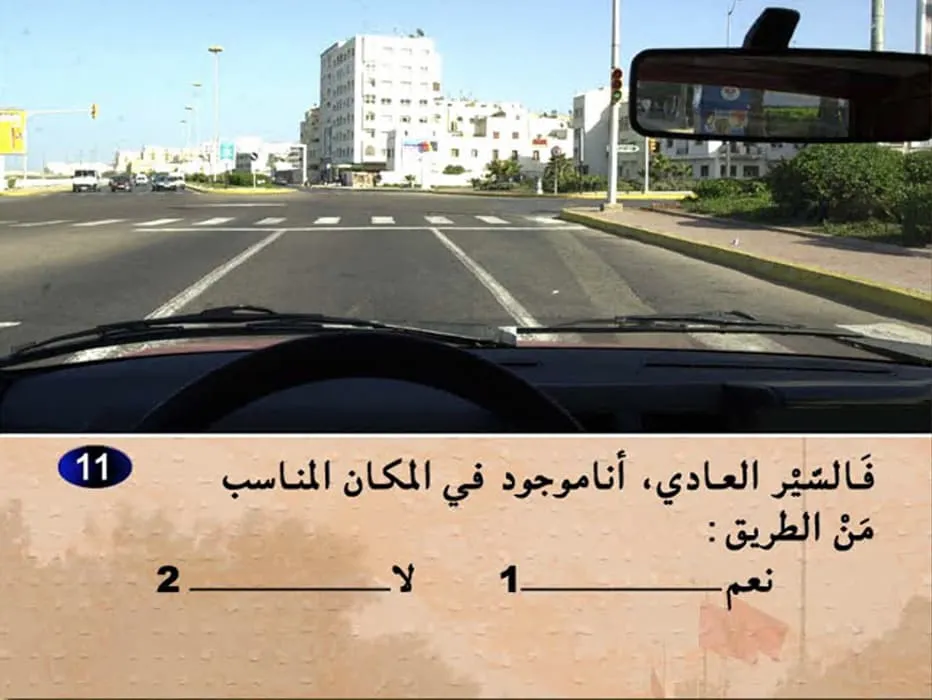
بيّن الجواب
الجواب الصحيح: 2
انا غير متواجد في المكان الماسب من الطريق في السير العادي، لانه في السير العادي المسلك المناسب هو المسلك المتواجد على أقصى اليمين.
السؤال 12
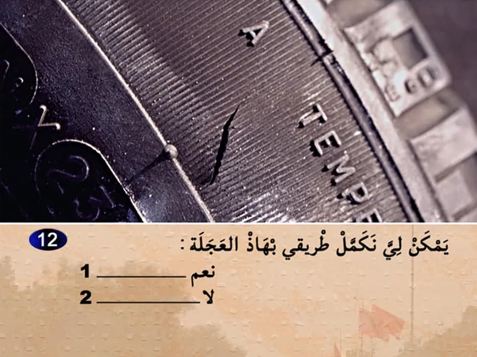
بيّن الجواب
الجواب الصحيح: 2
كما هو موضح في الصورة فعجلة العربة في حالة غير جيدة لذلك لا يمكنني إكمال الطريق بها.
السؤال 13
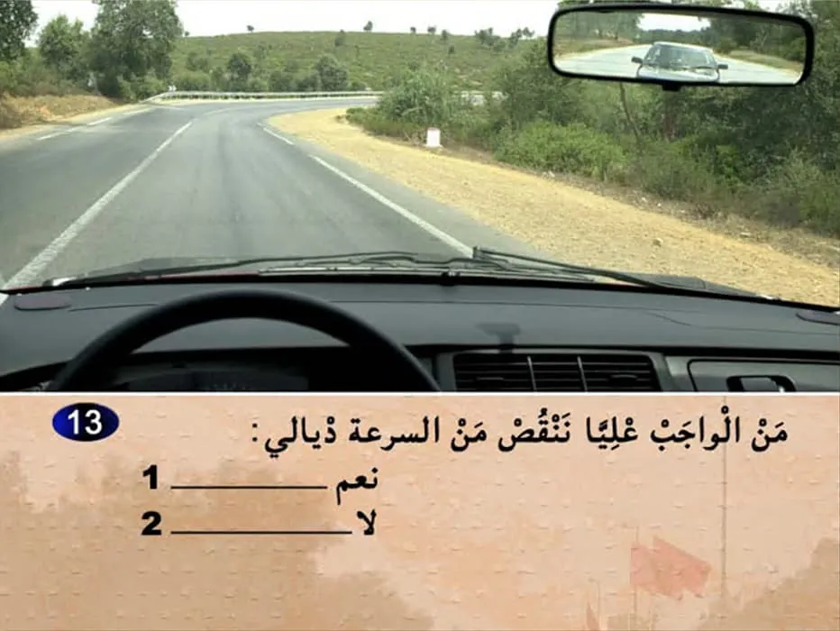
بيّن الجواب
الجواب الصحيح: 1
في المنعرجات لا تكون الرؤية واضحة، لذلك من الواجب علي اني أنقص من السرعة في المنعرج.
السؤال 14
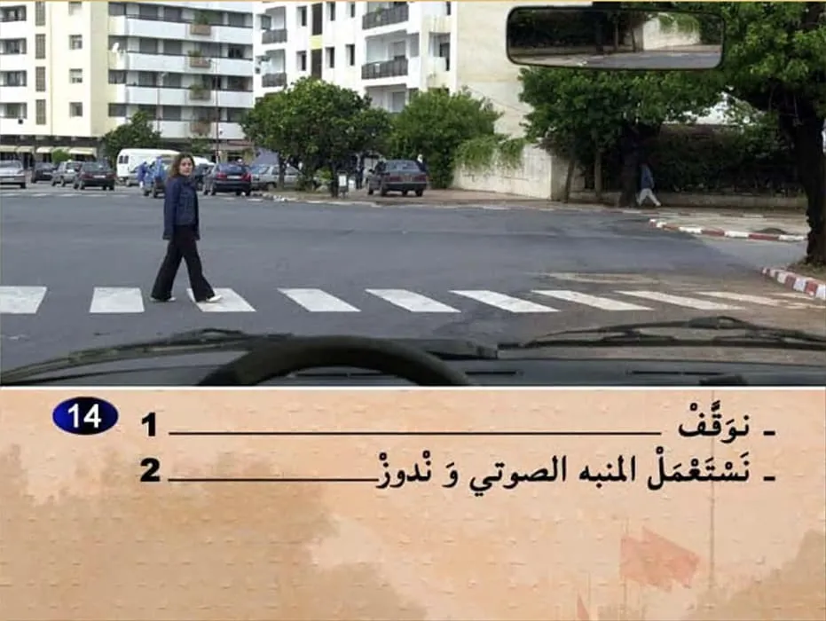
بيّن الجواب
الجواب الصحيح: 1
من الواجب عليا نوقف انه يوجد راجلين من مسلك الراجلين والمرور بعدهم، وممنوع إستعمال المنبه الصوتي لانه ممنوع داخل المدينة الّا في الحالات الضرورية وحالات الخطر.
السؤال 15
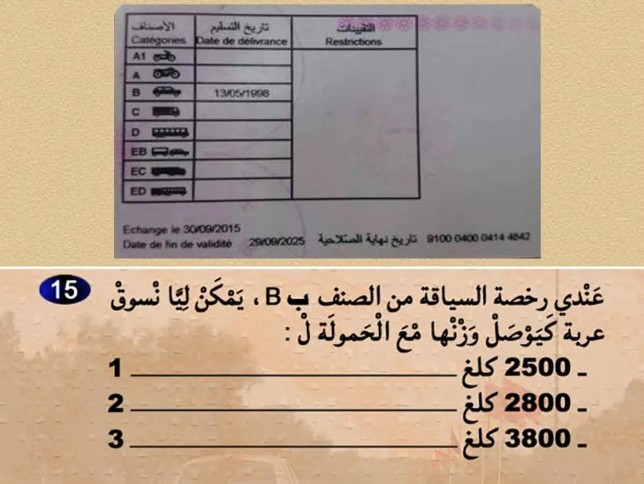
بيّن الجواب
الجواب الصحيح: 1 و 2
رخصة السياقة من صنف ب B تسمح لي نسوق عربة مع وزن الحمولة الى 3500 كلغ، ادا الإجابة هي 1 و 2.
السؤال 16
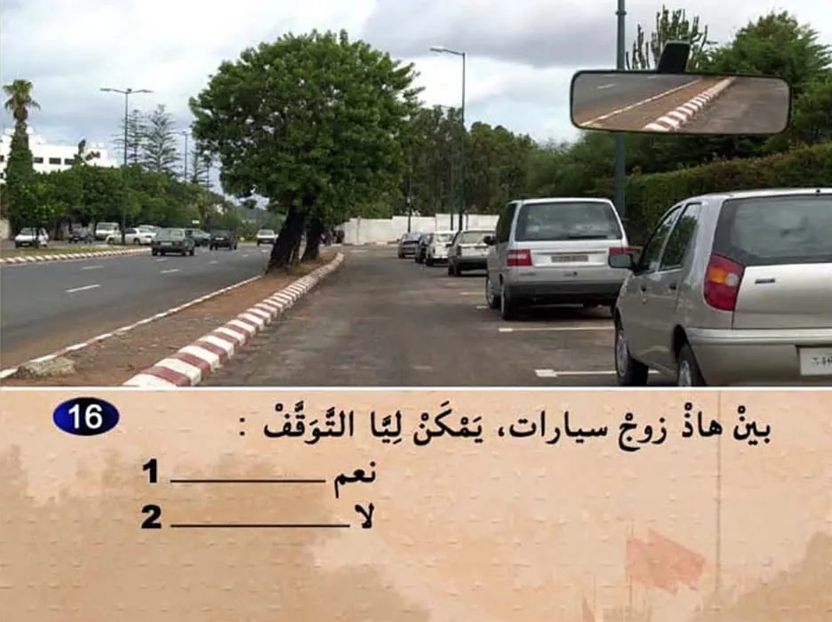
بيّن الجواب
الجواب الصحيح: 1
كما هو واضح في الصورة فالمكان مناسب للتوقف ولا توجد أي اشارة تمنعني من التوقف.
السؤال 17
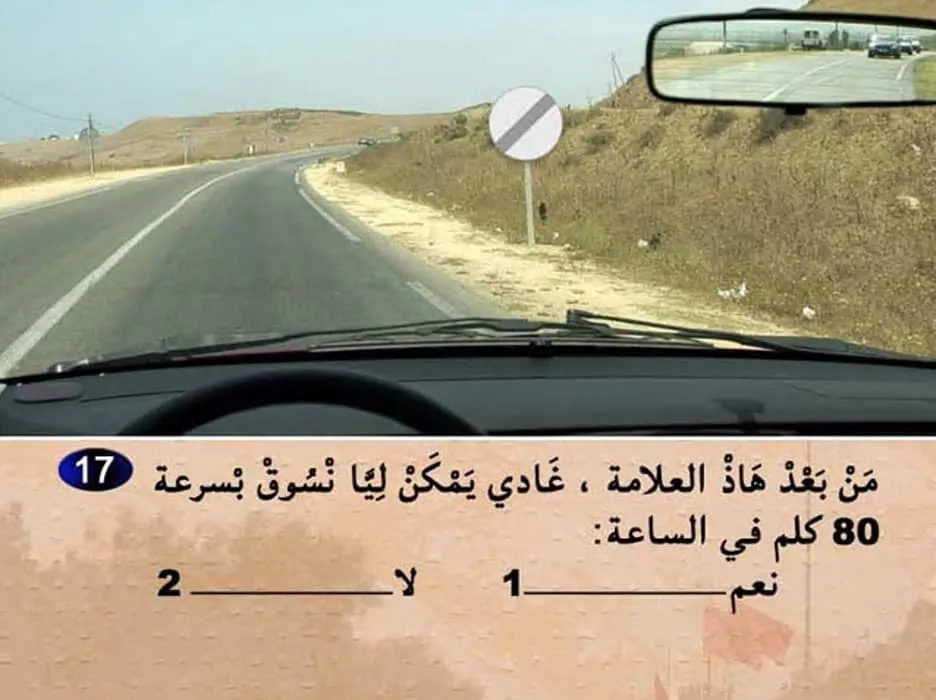
بيّن الجواب
الجواب الصحيح: 1
العلامة الطرقية تنهي المنع الدي كان موجود من قبل، وبما انها طريق وطنية والسعة مخددة في 100 كلم في الساعة، إذا فيمكنني ان أقود السيارة ب 80 كلم في الساعة.
السؤال 18
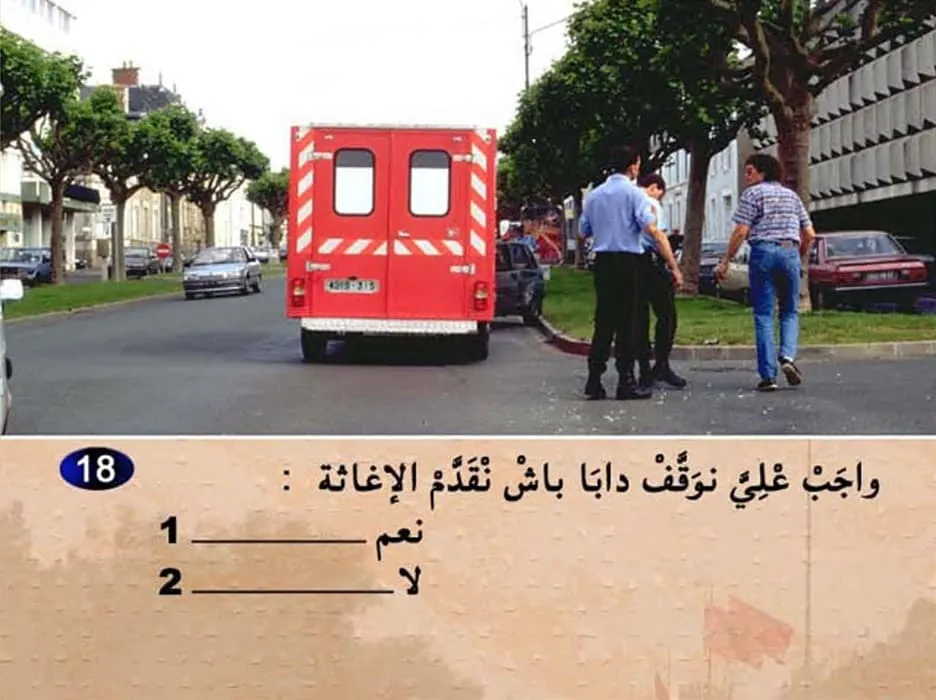
بيّن الجواب
الجواب الصحيح: 2
عندما تتواجد سيارة الإسعاف في مكان الحادث او عربات أخرى قبل مني فليس من الواجب عليا نوقف باش نقدم الإغاثة لانه يوجد من يقوم بها في هذه اللحظة.
السؤال 19
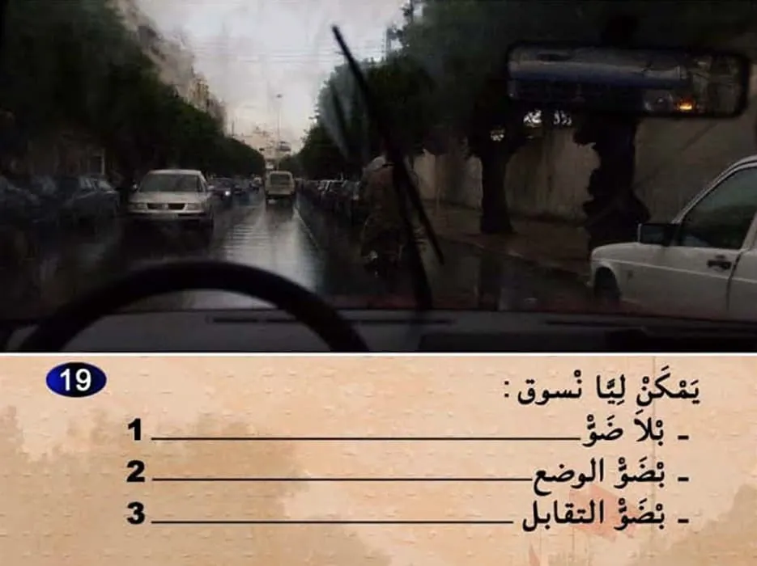
بيّن الجواب
الجواب الصحيح: 2 و 3
في الليل او أثناء وجود حالة طقس ممطرة او وجود ضباب فلا يمكن السير بدون أضواء، في هذه الحالة أثناء هطول الأمطار، نقوم بالسّير بإستعمال أضواء التّقابل وأضواء الضباب الأمامية، بالاضافة لإمكانية إستعمال أضواء الوضع مع أضواء التقابل او الضبابة، وبما انه لا يوجد أضواء الضبابة الأمامية ضمن الإختيارات التي في السؤال فنقوم بإختيار أضواء التقابل وأضواء الوضع.
⚠️ ملاحظة: يمكن استعمال أضواء الوضع في آن واحد مع أضواء الطريق وأضواء التقابل والأضواء الخاصة بالضباب، ويمكن كذلك استعمالها وحدها عند وقوف المركبة أو توقفها أو عندما تكون ظروف الإنارة على الطرق، ماعدا الطريق السيار أو الطرق ذات المسالك الخاصة. الجواب الصحيح هو رقم 2 و 3.
السؤال 20
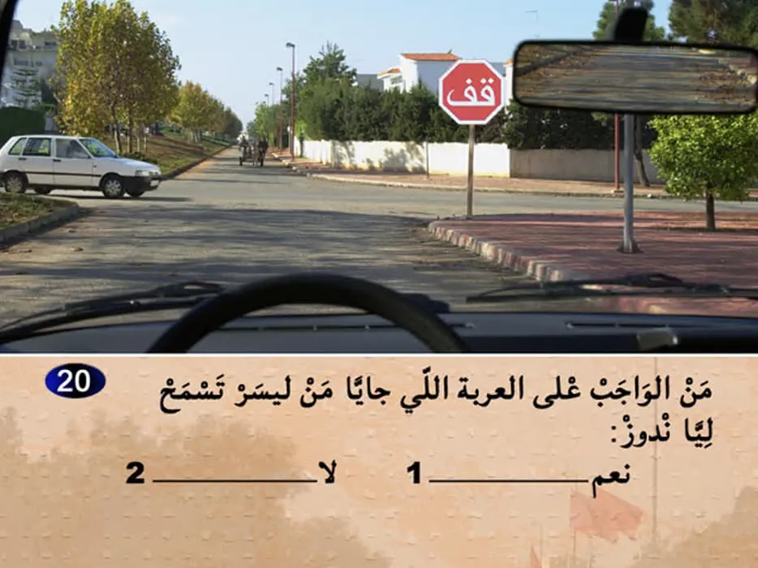
بيّن الجواب
الجواب الصحيح: 2
في ملتقى الطرق توجد علامة طرقية تجبرني على الوقوف وأن أسمح بالسيارات القادمة من على اليمين ومن على اليسار بالمرور أولا وبعد ذلك يمكنني المرور، إذا ليس من الواجب على السيارة البيضاء ان تسمح لي بالمرور.
السؤال 21
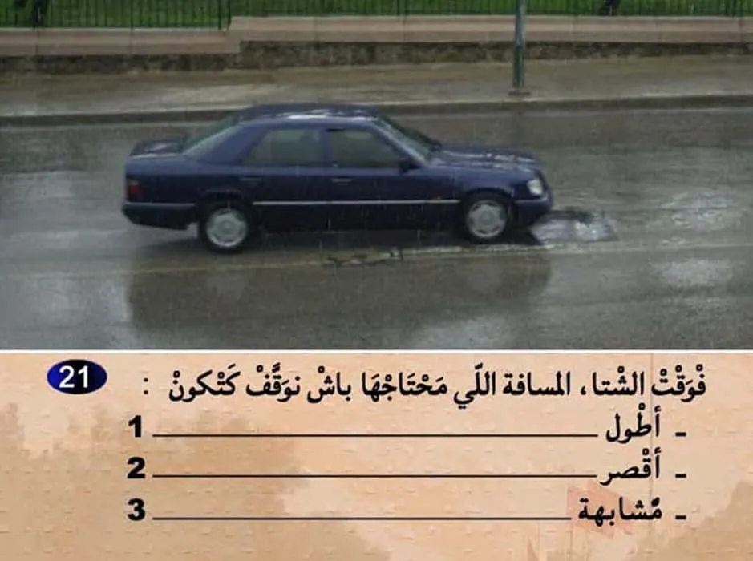
بيّن الجواب
الجواب الصحيح: 1
في حالة الجو الممطر مثلا في الصورة فالمسافة التي أحتاجها لكي أتوقف تكون أطول لانه بسبب المطر ممكن ان تنزلق السيارة قليلا لذلك المسافة تكون أطول عندما يكون الجو عادي.
السؤال 22
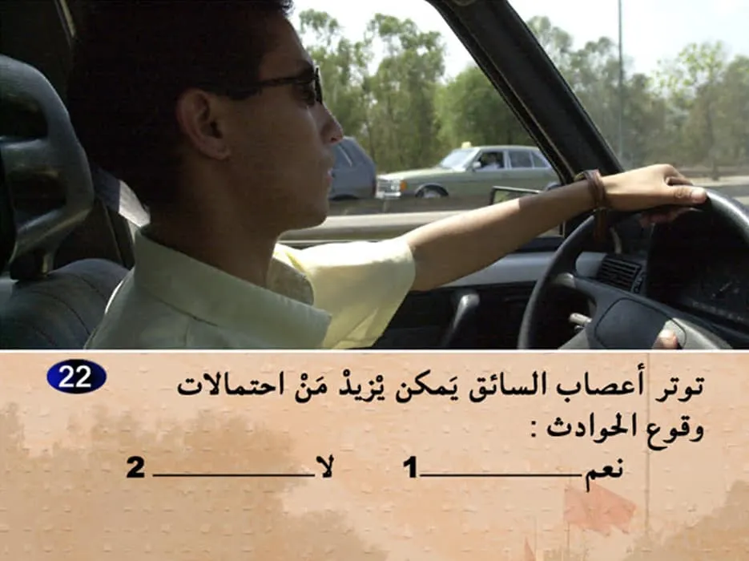
بيّن الجواب
الجواب الصحيح: 1
بطبيعة الحال فعندما يكون السائق متوتر الأعصاب ان يزيد من إحتمال وقوع حوادث، لانه يأخد قرارات غير صائبة.
السؤال 23
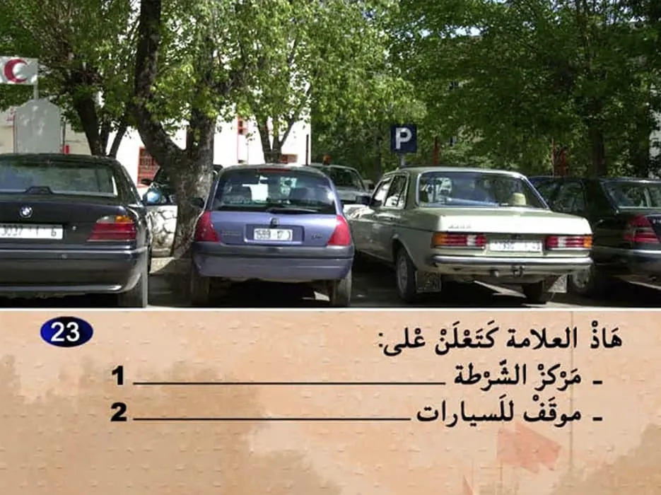
بيّن الجواب
الجواب الصحيح: 2
العلامة الموجودة P فهي تعني Parking أي موقف سيارات وليس مركز الشرطة.
السؤال 24
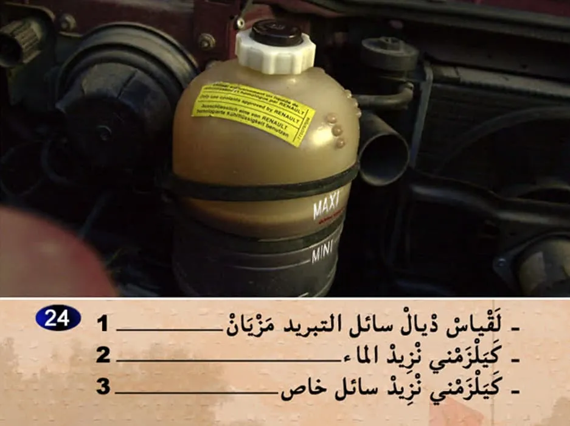
بيّن الجواب
الجواب الصحيح: 1
قارورة سائل التبريد تحتوي على كلمة MAXI والتي تعني الحد الأقصى وكلمة MINI والتي تعني الحد الأدنى، وكما هو واضح في الصورة فسائل التبريد يوجد في حد مناسب وجيد وليس علي ان أضيف أي شيئ.
السؤال 25
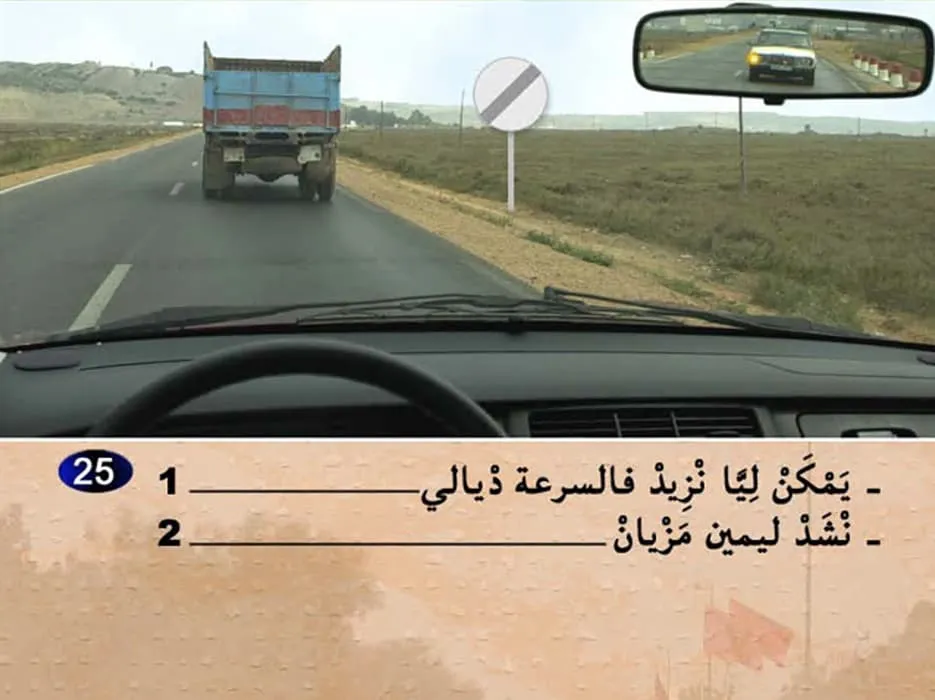
بيّن الجواب
الجواب الصحيح: 2
توجد سيارة تستعد لعملية التجاوز، في هذه الحالة يجب فقط ان ألتزم اليمين ولا أزيد في السرعة لكي أسهل عليها عملية التجاوز.
السؤال 26
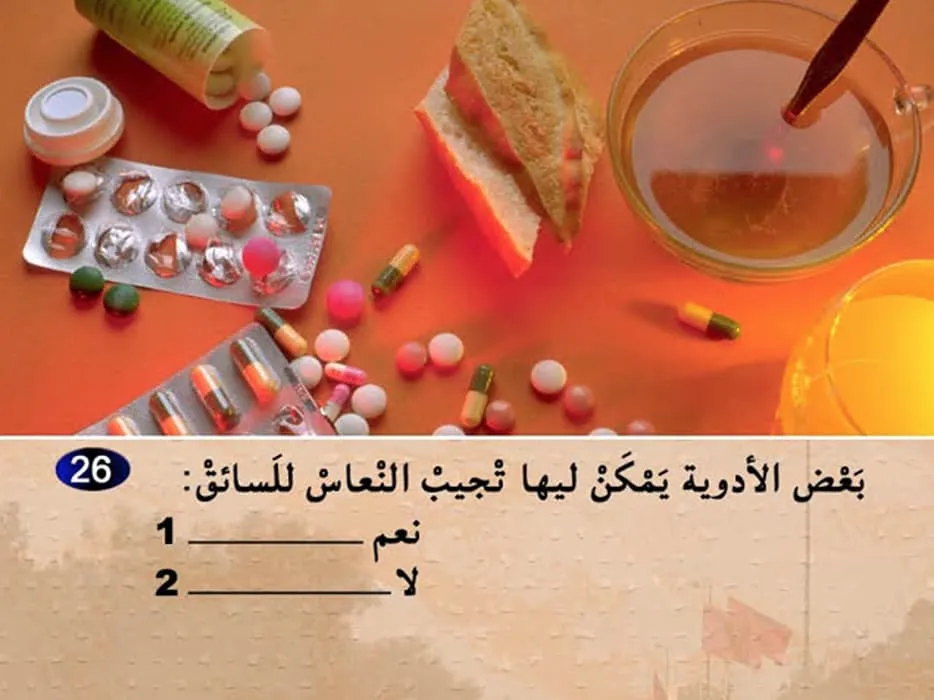
بيّن الجواب
الجواب الصحيح: 1
بطبيعة الحال توجد بعض الأدوية اللتي تأثر على الإنسان وتصيبه مثلا بأعراض مثل الرغبة بالنوم، لذلك وجب أخد الحيطة والحذر عند تناول الأدوية أثناء السياقة.
السؤال 27
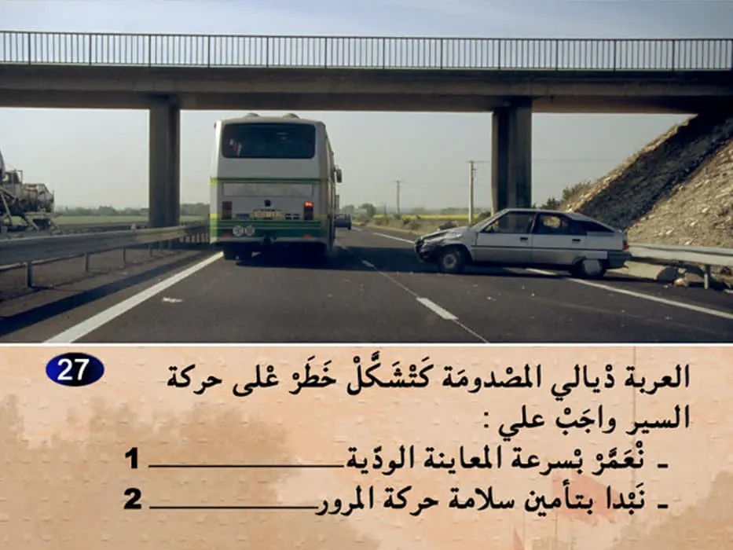
بيّن الجواب
الجواب الصحيح: 2
أول شيئ من بعد أي حادثة طرقية يجب علي أن أبدا بتأمين سلامة حركة المرور أولا لكي لا تحدث حوادث اخرى.
السؤال 28
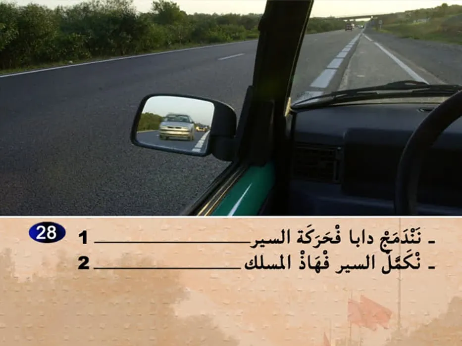
بيّن الجواب
الجواب الصحيح: 2
في هذه الحالة بما انه توجد سيارات قادمة فلا يمكن ان أندمج في حركة السّير لكي لا تقع حوادث السير، يجب إكمال سيري في هدا المسلك وبعد ان تمر السيارات يمكنني الإندماج.
السؤال 29
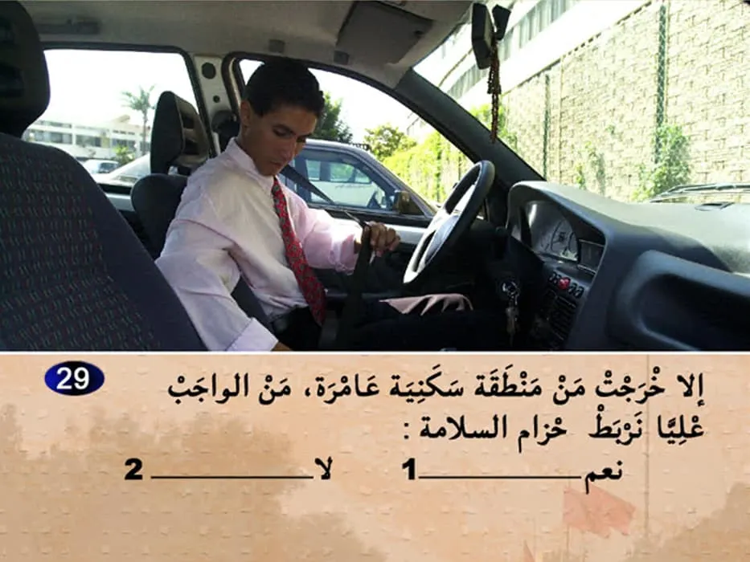
بيّن الجواب
الجواب الصحيح: 1
حزام السلامة واجب عليا داخل أو خارج المدينة لا يوجد فرق، عند السياقة يجب وضعه.
السؤال 30
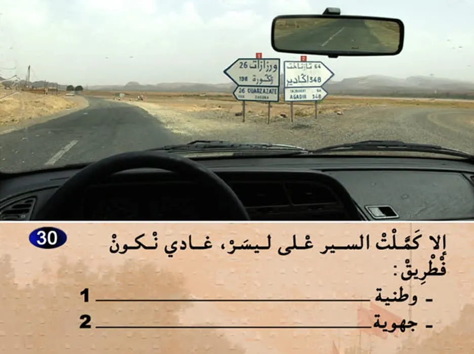
بيّن الجواب
الجواب الصحيح: 1
يوجد علامات طرقية صغيرة فوق العلامات الطرقية الكبيرة وهي باللون الأحمر وهي تعني طريق وطنية.
السؤال 31
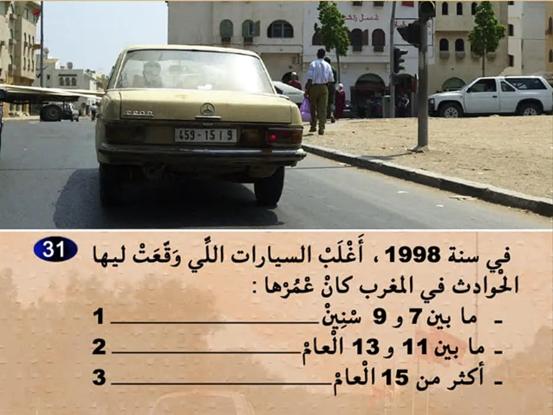
بيّن الجواب
الجواب الصحيح: 3
إحصائيات في سنة 1998 أظهرت أن أغلب السيارات اللتي تسببت في حوادث السير كان عمرها اكثر من 15 عام، وهدا شيئ عادي لانه الحالة الميكانيكية للسيارات لا تكون جيدة بعد مرور سنوات عديدة.
السؤال 32
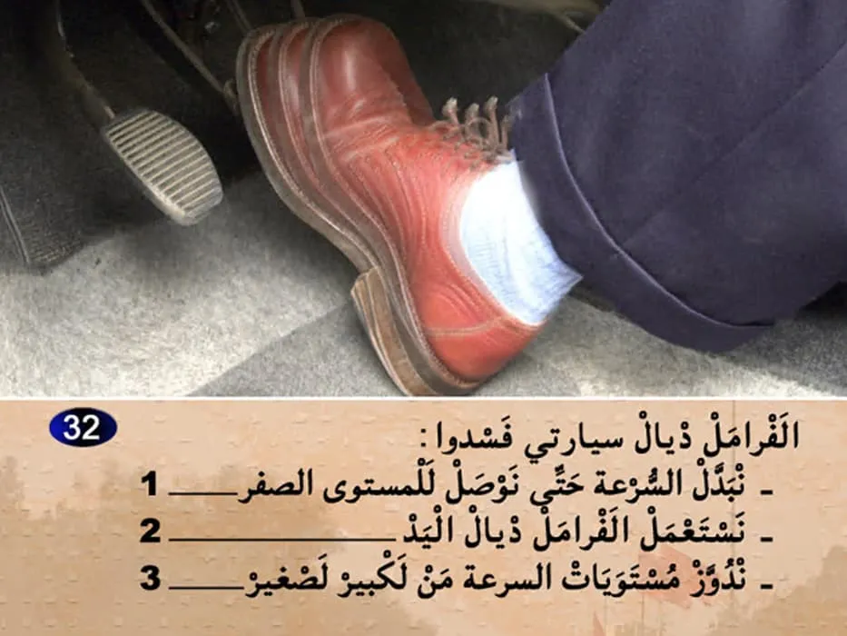
بيّن الجواب
الجواب الصحيح: 2 و 3
ادا قمت بتغيير السرعة حتى أصل للمستوى الصفر سوف تفقد السيارة سوف تفقد الطاقة الحركية، لذلك يوصي الخبراء بتغيير مستويات السرعة من الكبيرة الى الصغيرة وخصوصا المستوى الثاني وبعد ذلك إستعمال الفرامل الخاصة باليد.
السؤال 33
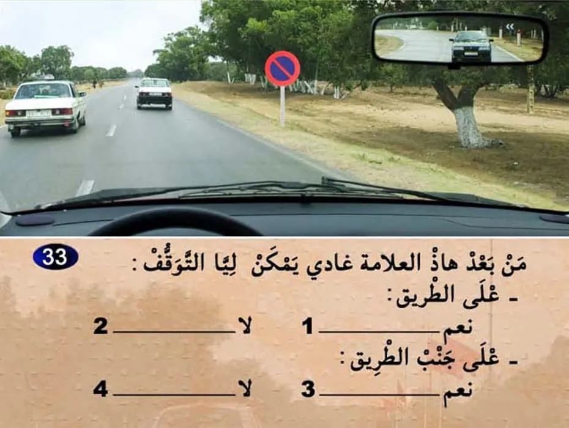
بيّن الجواب
الجواب الصحيح: 2 و 4
العلامة الطرقية تعني انه ممنوع التوقف نهائيا، يعني لا يمكنني التوقف على الطريق وكذلك على جنب الطريق.
السؤال 34
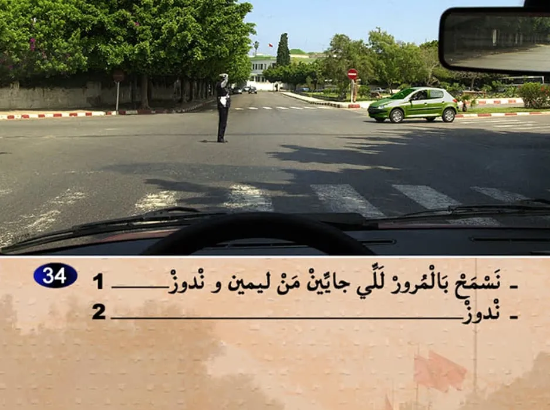
بيّن الجواب
الجواب الصحيح: 2
يوجد شرطي ينظم حركة السّير، وبما انه يقف جنبا وليس أمامي مباشرة، لذلك بما انه يقف جنبا فهي حركة تعني انه يمكنني المرور.
السؤال 35
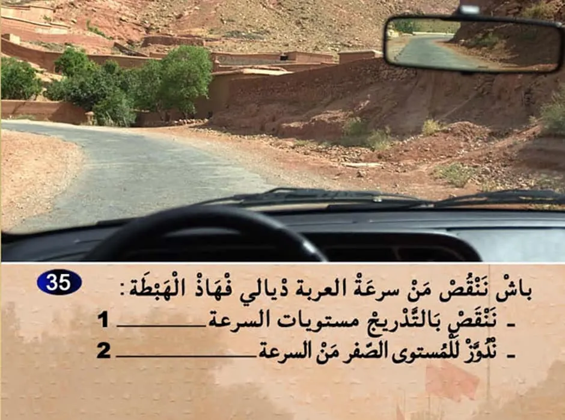
بيّن الجواب
الجواب الصحيح: 1
في هذا المنحدر أنقص بالتدريج من مستويات السرعة ويفضّل المستوى الثاني لانه يمكنك من التحكم بالسياقة بشكل أفضل.
السؤال 36
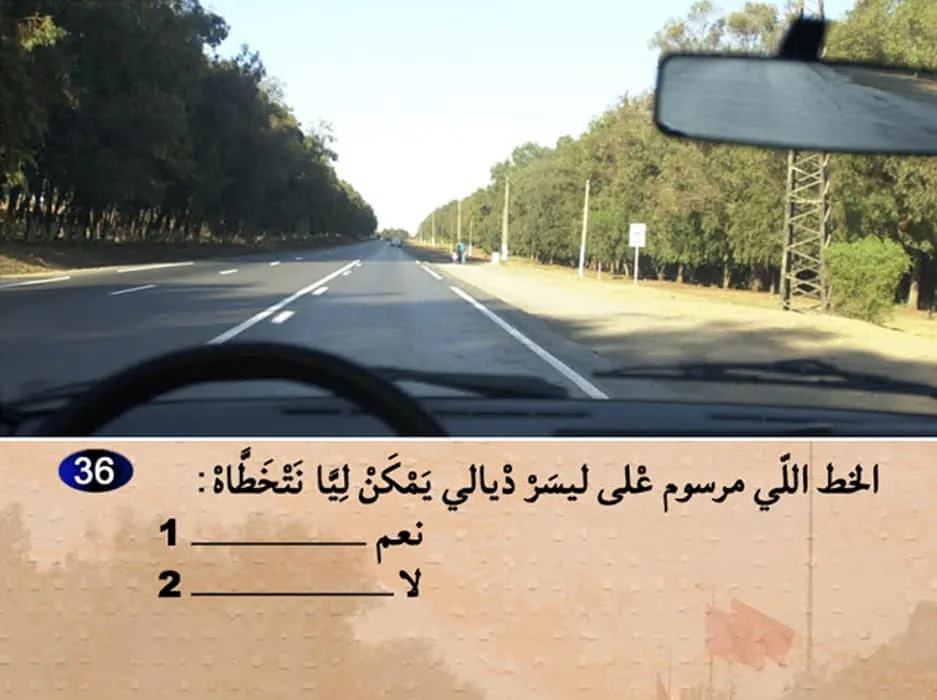
بيّن الجواب
الجواب الصحيح: 1
الخطوط المتواجدة تنظم عملية التجاوز، وأول خط يتواجد على يساري هو خط متقطع ويمكنني ان أتخطاه يعني أن أتجاوز السيارات.
السؤال 37
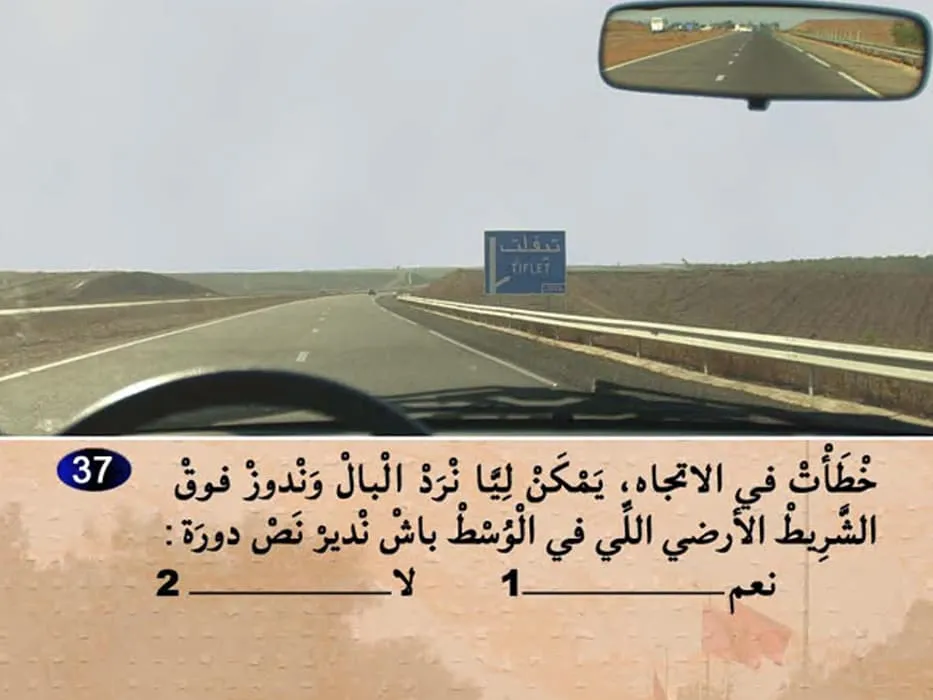
بيّن الجواب
الجواب الصحيح: 2
في الطّريق السيار يمنع منعا باتا ان يقوم السائق بعمل نصف دورة.
السؤال 38
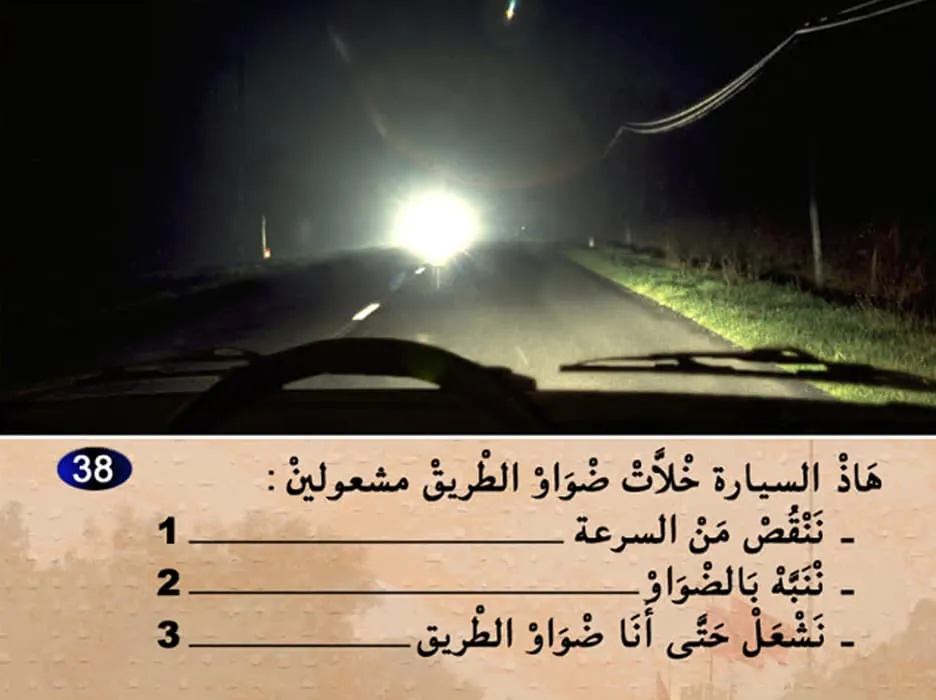
بيّن الجواب
الجواب الصحيح: 1 و 2
في هذه الحالة يحب الإنقاص من السرعة، أن أنبه بالأضواء، ولا يجب تشغيل أضواء الطريق لان هذا يسمى عناد، وفي الطريق يجب ان يكون هنالك تسامح وليس عناد.
السؤال 39
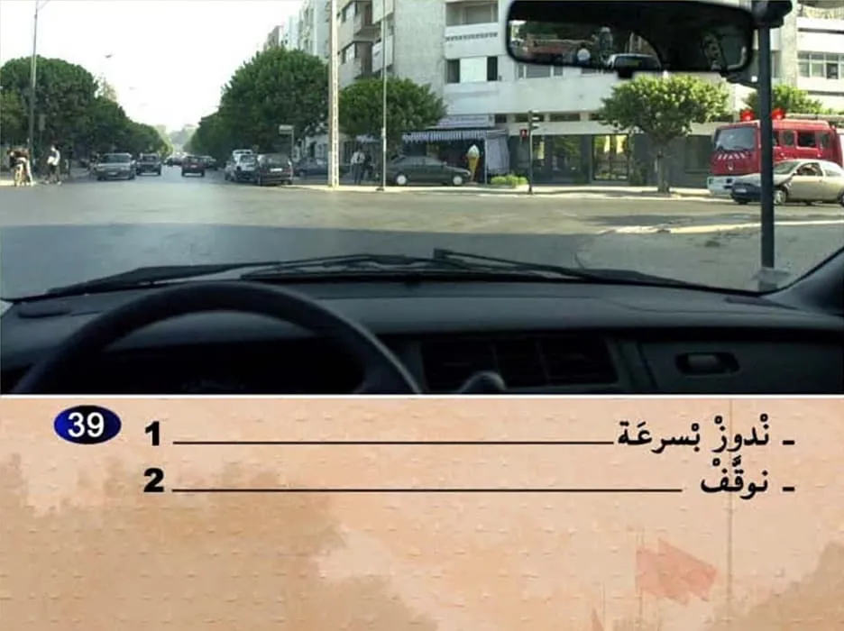
بيّن الجواب
الجواب الصحيح: 2
الشرطة أو سيارات الإسعاف او رجال المطافئ او ... لديهم حق الأسبقية دائما، إذن في هذه الحالة يجب التوقف وان أسمح بمرور رجال المطافئ.
السؤال 40
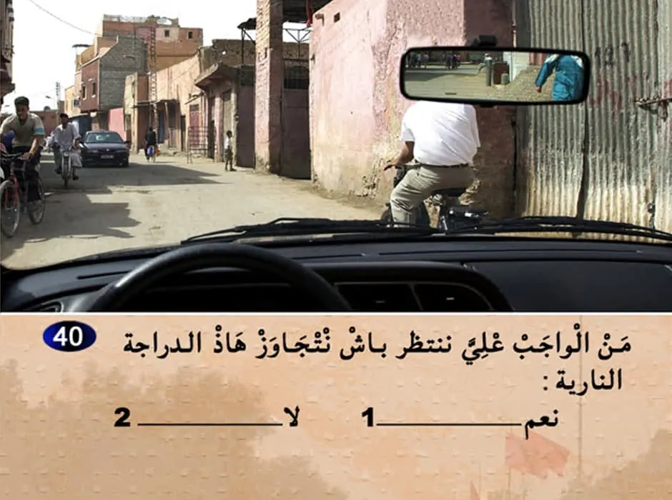
بيّن الجواب
الجواب الصحيح: 1
الطريق ضيّقة ويوجد سيارة قادمة في الطريق المتقابل، في مثل هذه الحالات يجب السير بشكل عادي وفي أقصى اليمين لتسهيل حركة المرور والأنتظار لكي أقوم بعملية التجاوز.